What supports repair?
In traumatic, spinal and hypoxic–ischemic injury models, examine how transplanted cells and trophic signaling relate to recovery, including studies of BDNF and SYNPO2.
NEUROSCIENCE · ANESTHESIOLOGY · SLEEP MEDICINE
My work connects neural repair, brain development and aging with sleep medicine and brain–computer interface platforms, focusing on testable questions and clinical needs.
Liu-Lin Xiong · Professor, Chief Physician & Doctoral Supervisor
The First People’s Hospital of Zunyi
(The Third Affiliated Hospital of Zunyi Medical University)
RESEARCH / QUESTIONS
A long-standing focus on cellular repair after injury now connects with human tissue profiling and brain organoids to investigate cell-type differences, regional vulnerability and responses to anesthetic exposure.
In traumatic, spinal and hypoxic–ischemic injury models, examine how transplanted cells and trophic signaling relate to recovery, including studies of BDNF and SYNPO2.
Combine fetal brain single-nucleus profiling with regional organoids. Down syndrome, cleft lip and palate, and anesthetic exposure remain distinct biological contexts.
Use tree shrew aging models and peripheral immune studies to examine cross-species similarities and differences, without presuming a single mechanism across aging and development.
RESEARCH IN PROGRESS / A CONTINUING LINE OF INQUIRY
A continuing interest in cell states and neural function connects repair in animal models with cell atlases, human models and new questions arising from clinical observations.
Stem-cell differentiation, trophic signaling and recovery in spinal cord and traumatic brain injury models.
First / co-first authorRepresentative paper ↗Patient immune profiling and mouse interventions extend the questions to brain–peripheral immune interactions in Alzheimer’s disease.
Co-first authorRepresentative paper ↗Tree shrew retinal profiling and peripheral NK-cell features in Parkinson’s disease.
Co-first / co-corresponding authorRepresentative paper ↗Fetal brain atlases and neuronal experiments complement ongoing SYNPO2 injury-repair and tree shrew aging studies.
Co-correspondence & supervisionRepresentative paper ↗Regional brain organoids address anesthetic exposure; Alzheimer’s and sleep studies extend the work to patient follow-up.
Co-corresponding / corresponding authorRepresentative paper ↗The timeline follows representative publication dates and the expansion of the research scope. Each disease area has its own evidence base; authorship roles refer to the corresponding papers.
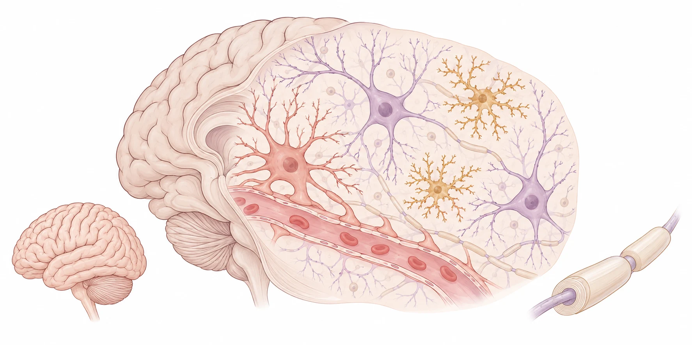
COMPLEMENTARY EVIDENCE
Atlases identify candidate cells and molecules; interventions test functional relationships within models; patient follow-up defines outcomes and the next validation questions.
Read the full presentation PDF · 22 pages ↗Studies of BDNF and SYNPO2 connect cellular interventions with neural function, sustaining a preclinical line of investigation.
Cell Death & Disease · 2025 ↗Distinct Down syndrome and cleft lip/palate brain atlases map cell-state differences; MEF2C knockdown tests synaptic and electrophysiological changes.
Advanced Science · 2025 online ↗Dorsal and ventral forebrain organoids from two healthy donors enable comparisons of transcriptional and functional responses to defined propofol exposure.
Stem Cell Reports · 2026 ↗Pathology and cell atlases in naturally aged tree shrews complement separate studies of peripheral B cells in AD and NK cells in PD.
MedComm · 2025 ↗Collaborative work on MyL1 myelin nanoscopy, mitochondria–lysosome probes and telomere probes expands structural and cell-state measurement.
Journal of Nanobiotechnology · 2024 ↗Single-arm postoperative follow-up in severe AD and a 125-patient retrospective sleep cohort inform questions for future controlled studies.
Alzheimer’s & Dementia · 2026 ↗SELECTED PUBLICATIONS
Selected papers ordered by first online publication. Shared authorship reflects collaborative contributions.
HUMAN MODELS & ANESTHETIC EXPOSURE
Cortical and subpallial organoids reveal region-dependent cellular and electrophysiological responses to anesthetic exposure.
Evidence & context: In vitro evidence; it does not establish a safe dose for patients.
Stem Cell Reports · 2026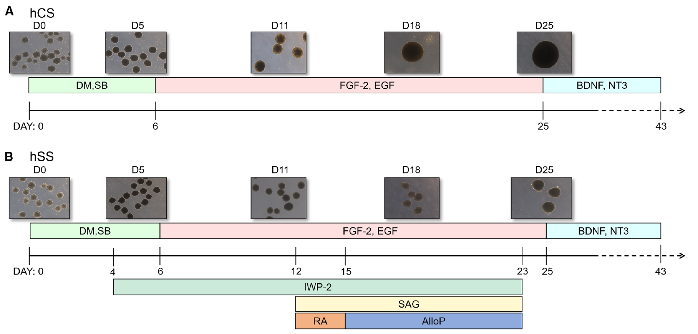
She et al., Stem Cell Reports (2026), Fig. 1A–B; original panels cropped; © The Authors; CC BY 4.0. Original article · Reuse license
FETAL NEURODEVELOPMENT & CELL ATLASES
Single-nucleus transcriptomics across two cortical regions identifies cell-type alterations and candidate developmental regulators.
Evidence & context: Tissue atlases generate mechanistic hypotheses; they do not alone establish causality.
Nature Communications · 2025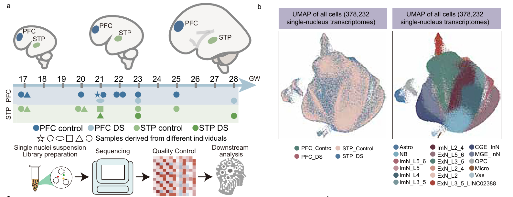
Niu et al., Nature Communications (2025), Fig. 1a–b; original panels cropped; © The Authors; CC BY 4.0. Original article · Reuse license
CRANIOFACIAL DIFFERENCES & NEURODEVELOPMENT
Fetal brain profiling and neuronal experiments examine neurodevelopmental changes associated with craniofacial abnormalities.
Evidence & context: A distinct disease-specific line of investigation.
Advanced Science · 2025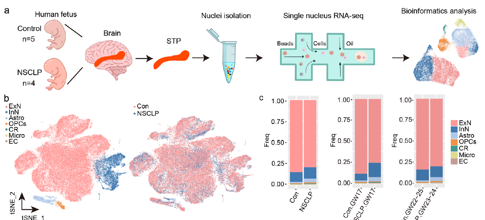
Xiong et al., Advanced Science (2025), Fig. 1a–c; original panels cropped; © The Authors; CC BY. Original article · Reuse license
CELLULAR INTERVENTION & NEURAL REPAIR
Investigates SYNPO2 in the context of mesenchymal stromal cell intervention and neuronal injury.
Evidence & context: Preclinical research; human efficacy requires separate validation.
Cell Death & Disease · 2025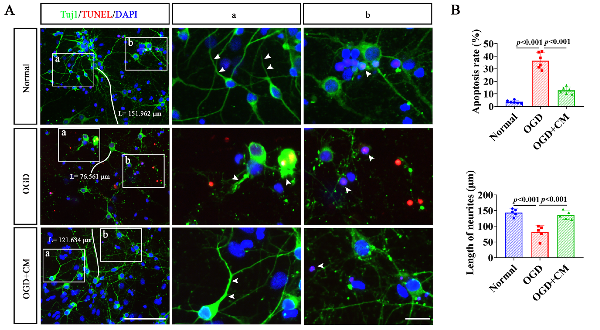
Xue et al., Cell Death & Disease (2025), Fig. 1A–B; original panels cropped; © The Authors; CC BY 4.0. Original article · Reuse license
CROSS-SPECIES BRAIN AGING
Combines phenotyping and single-cell analysis of naturally aged tree shrews to investigate brain aging.
Evidence & context: Model similarities do not imply full recapitulation of human disease.
MedComm · 2025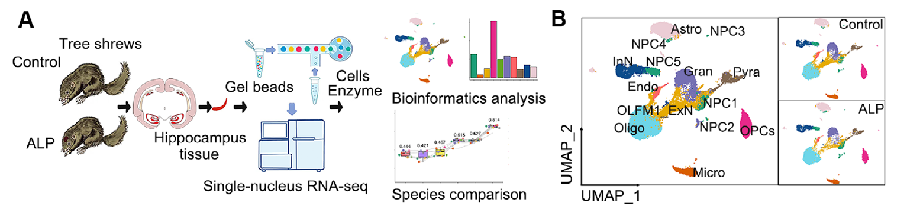
Xiong et al., MedComm (2025), Fig. 2A–B; original panels cropped; © The Authors; CC BY. Original article · Reuse license
PERIPHERAL IMMUNITY & ALZHEIMER’S DISEASE
Combines patient immune profiling with mouse interventions to investigate peripheral immune involvement in brain pathology.
Evidence & context: Human associations and animal interventions carry different levels of evidence.
Experimental & Molecular Medicine · 2021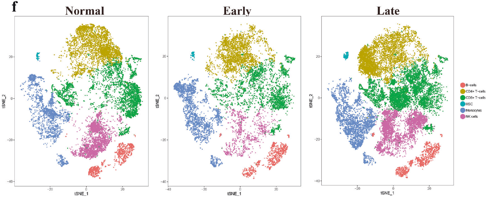
Xiong et al., Experimental & Molecular Medicine (2021), Fig. 2f; original panels cropped; © The Authors; CC BY 4.0. Original article · Reuse license
NEURAL STEM CELLS & FUNCTIONAL RECOVERY
Uses neural stem cell transplantation, BDNF knockdown and antibody blockade in a rat injury model to examine repair mechanisms.
Evidence & context: Intervention evidence within the model; not evidence of patient benefit.
Molecular Neurobiology · 2017 / 2018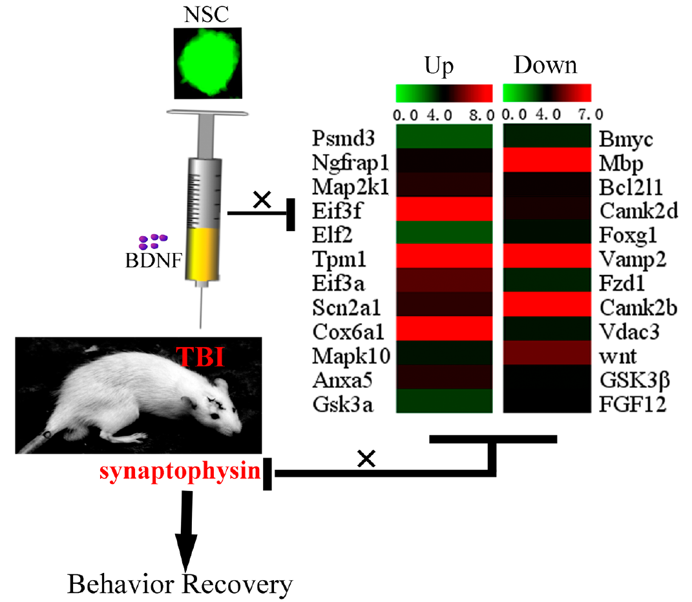
Xiong et al., Molecular Neurobiology, Fig. 11; © Springer Science+Business Media New York (2017). Original article
CLINICAL & TRANSLATIONAL RESEARCH
Clinical work spans anesthesiology and sleep medicine. Current sleep research includes retrospective cohorts and exploratory case reports, with an emphasis on phenotyping, outcome measurement and prospective validation.
Leads the development of sleep medicine services, connecting clinical questions with cohort research and outcome assessment. Center and platform development is presented in the Leadership section below.
Read the report ↗Examines sleep-related outcomes in 125 patients. Retrospective design and diary-based measurement limit causal interpretation.
Frontiers in Psychiatry · 2026 ↗Priorities include consistent diagnosis, medication and comorbidity records, objective sleep measures and longitudinal follow-up before appropriately controlled prospective studies.
DISCIPLINE & TEAM DEVELOPMENT
Building on anesthesiology, the development of sleep medicine and brain–computer interface platforms connects clinical services, collaborative research and professional training.
ANESTHESIOLOGY, SLEEP MEDICINE & BCI
From sleep assessment and perioperative brain health to neural assessment and intelligent rehabilitation, multidisciplinary collaboration connects clinical services with research questions.
Discipline structure follows the supplied profile draft for Physician News (file dated 29 March 2026); the BCI center’s official opening date follows the 12 April 2026 opening report.
Since 2024, she has served as Director of Anesthesiology at the First People’s Hospital of Zunyi, advancing perioperative practice, clinical research and specialist training.
Appointment: supplied July 2026 CV.
The sleep medicine center led by Liu-Lin Xiong opened on 30 March 2025, bringing assessment, monitoring, treatment and follow-up into a connected service.
Guizhou Daily · 8 April 2025 ↗Opened at the Taoxi campus on 12 April 2026. Academic co-leads Liu-Lin Xiong and Xiaohong Fu support multidisciplinary work in brain–computer interfaces, neuromodulation and intelligent rehabilitation.
Explore the center’s development ↓BRAIN–COMPUTER INTERFACE MEDICAL CENTER
From multimodal brain-function assessment to brain–computer interfaces and intelligent rehabilitation.
2026.04.12Opened · Taoxi campus
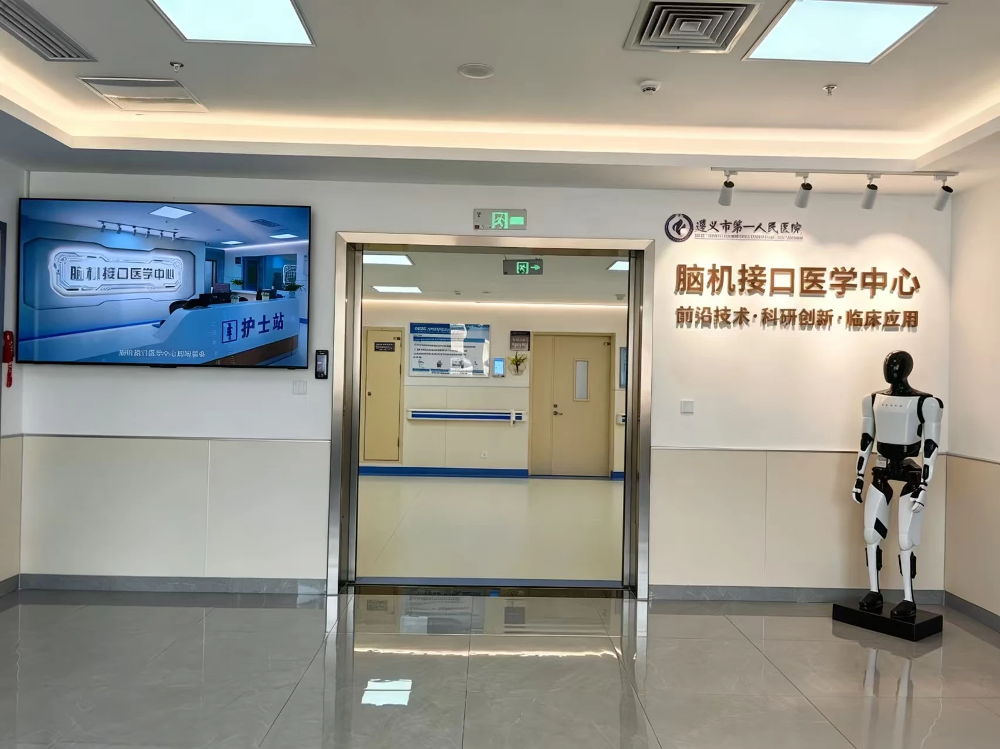
Clinical, nursing and research staff
Doctoral degree holders
Types of specialist functional areas
Collaborating disciplines: neurosurgery, neurology, rehabilitation, psychiatry, sleep medicine and anesthesiology
Staffing and facilities are center-wide figures from the department’s profile dated 26 September 2026.
EEG, functional near-infrared spectroscopy (fNIRS), event-related potentials and eye tracking support neural-function and behavioral research.
Non-invasive BCI data-acquisition and training wards, with neuromodulation equipment including transcranial magnetic stimulation, link assessment with intervention research.
BCI rehabilitation robotics, hand-function training and multimodal VR interaction support work on motor, cognitive and functional recovery.
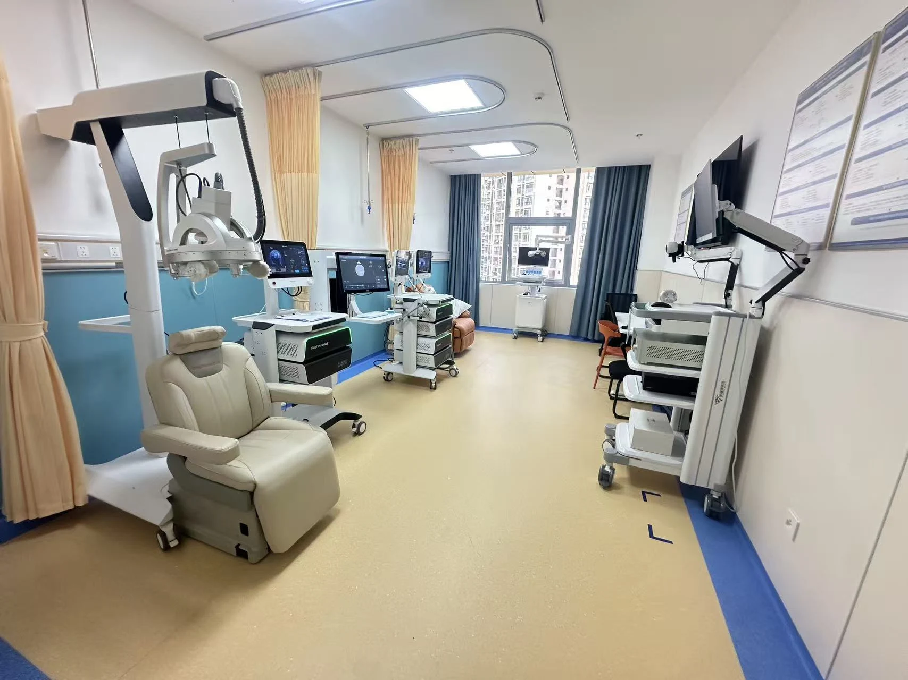
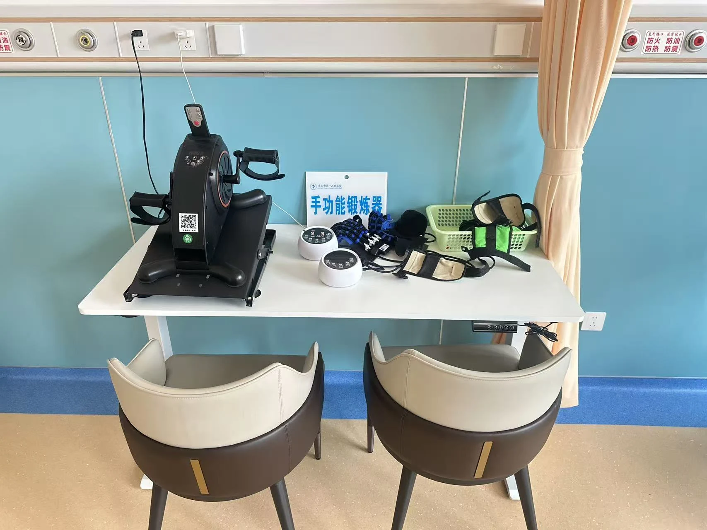
PLATFORMS & COLLABORATION
Designated a demonstration base for BCI and intelligent rehabilitation wards by the Ministry of Education Engineering Research Center for Human–Machine Intelligent Technologies and Systems. Specialist collaboration includes Tianjin University Medical School and the General Hospital of the Eastern Theater Command, with medical-engineering collaboration involving UESTC.
TRAINING & REGIONAL SERVICES
A university-linked course in medical applications of BCI complements training through theory, practical sessions and case discussions. In September 2026, the first external cohort of four clinical, nursing and technical staff from Yutian County Hospital of Traditional Chinese Medicine completed one month of training.
Sources: the center profile and supplied photographs dated 26 September 2026; opening report (12 April), conference and training report (19 July), and first external training-cohort report (14 September). These document facilities, development and training; equipment and service availability do not establish treatment efficacy.
EDUCATION, QUALITY & PUBLIC ENGAGEMENT
Shared anesthesiology quality standards, service pathways and staff training support consistent practice at the Fenghuang and Taoxi campuses. Supplied records document selection for Guizhou’s “942 Peak Climbing Plan” for key clinical specialties.
Research-interest groups, summer research training and ward-based teaching connect early scientific exposure with clinical practice. Development programs and mentorship support young clinicians and their research teams.
World Sleep Day consultations, community talks and online outreach address sleep health, pain management and perioperative recovery. Specialist collaboration and training extend support to regional colleagues.
This section summarizes discipline development and teaching practices from the supplied Physician News profile draft; it does not imply that the draft has been published.
PROFILE & MILESTONES
Liu-Lin Xiong is a professor, chief physician and doctoral supervisor at the First People’s Hospital of Zunyi (The Third Affiliated Hospital of Zunyi Medical University). Her research combines cellular repair, single-cell approaches and human brain organoids to study neural injury, developmental vulnerability and brain aging.
Education and appointments are based on the supplied July 2026 CV. The award is documented by the Chinese Medical Association. Award list ↗
A 2023 conference in Kunming listed her as executive chair and a speaker on stem cells in neural repair, as documented in the published program.
Conference program ↗CONTACT & COLLABORATION
For discussions on brain organoids, neural repair and clinical sleep research.
xiongliulin@zmu.edu.cn